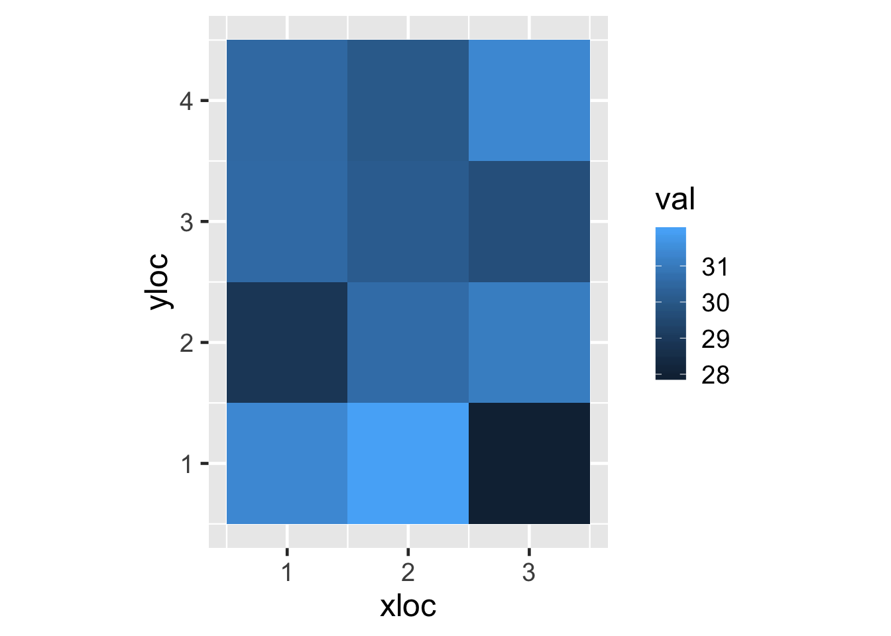

This doc assumes some familiarity with R, serving mostly as a refresher for basic concepts and introduction to more advanced concepts that come in handy when using the keras library for deep learning.
Vectors are the most basic type of data in R; here are three vectors of length 5, one a numeric vector, one
a character vector (which actually stores multi-character strings as elements), and one a logical vector:
num_vec <- c(1.3, 2.3, 3.3, 4.3, 5.3)
char_vec <- c("one", "second el", "third", "four", "fifth")
char_vec2 <- c("testing!")
log_vec <- c(TRUE, FALSE, TRUE, FALSE, FALSE)Something like answer <- 42 actually produces a length-one numeric vector, equivalent to answer <- c(42).
When performing operations (like +, *, ==, >, etc.) on two vectors, they will be compared element-by-element.
print(num_vec * c(10, 100, 1000, 10000, 100000))## [1] 13 230 3300 43000 530000If one is shorter, it will be “recycled” in the comparison (with a warning if the shorter vector wasn’t recycled evenly), even if the shorter vector is of length 1:
print(num_vec * c(10, -10))## Warning in num_vec * c(10, -10): longer object length is not a multiple of
## shorter object length## [1] 13 -23 33 -43 53print(num_vec * 10)## [1] 13 23 33 43 53We can index into vectors with other vectors; for example we might want to extract the second and fifth entries of num_vec:
selected <- num_vec[c(2, 5)]
print(selected)## [1] 2.3 5.3We can use shortcut syntax like 2:5 to produce the vector c(2, 3, 4, 5). This can be handy, for example, to get the second through the fifth element of another vector:
selected <- num_vec[2:5]
print(selected)## [1] 2.3 3.3 4.3 5.3Lastly, of occasional use, we can negate a vector to grab indices other than those specified.
selected <- num_vec[-c(2, 5)] # get indices 1, 3, 4
print(selected)## [1] 1.3 3.3 4.3Sometimes we want to print a message, rather than just a vector. The paste() function helps with this. First though, let’s see it’s “intended” usage of element-by-element pasting.
first_names <- c("Joe", "Kim")
last_names <- c("Montana", "Jong-un")
suspects <- paste(last_names, first_names, sep = ", ")
print(suspects)## [1] "Montana, Joe" "Jong-un, Kim"For writing simple messages, the inputs are frequently just length-1 vectors:
age <- 27
print(paste("Joe is", age, "years old.", sep = " "))## [1] "Joe is 27 years old."
R natively supports matrices; here’s how we can create a 4 by 5 matrix built from the numbers 1 through 20:
mat <- matrix(1:20, nrow = 4, ncol = 5)
print(mat)## [,1] [,2] [,3] [,4] [,5]
## [1,] 1 5 9 13 17
## [2,] 2 6 10 14 18
## [3,] 3 7 11 15 19
## [4,] 4 8 12 16 20As the printout hints at, we can get at individual entries or sub-matrices with a [row, col] syntax.
print(mat[3, 4]) # entry in row 3, column 4## [1] 15print(mat[1:2, 3:5]) # rows 1 and 2, cols 3 through 5## [,1] [,2] [,3]
## [1,] 9 13 17
## [2,] 10 14 18print(mat[, 3:5]) # all rows, columns 3 through 5## [,1] [,2] [,3]
## [1,] 9 13 17
## [2,] 10 14 18
## [3,] 11 15 19
## [4,] 12 16 20A special note: in R, if what would be returned is a “lower dimension”, the result will be a smaller-dimensional type. For example, if we request all rows, column 4, then what is returned is not a 4 by 1 matrix, but rather a vector representing the fourth column.
print(mat[, 4]) # all rows, fourth column## [1] 13 14 15 16To avoid this dropping, we can add a , drop = FALSE to the subsetting:
print(mat[, 4, drop = FALSE]) # all rows, fourth column, don't drop dimension## [,1]
## [1,] 13
## [2,] 14
## [3,] 15
## [4,] 16R also supports higher-dimensional arrays with the array() function. These get difficult to visualize, so for now
we’ll just illustrate using array() to recreate the same matrix as above; note that instead of specifying nrow and ncol, we just specify dim giving it a vector of number of rows and columns:
mat <- array(1:20, dim = c(4, 5))
print(mat)## [,1] [,2] [,3] [,4] [,5]
## [1,] 1 5 9 13 17
## [2,] 2 6 10 14 18
## [3,] 3 7 11 15 19
## [4,] 4 8 12 16 20Notice that R fills out the entries of the matrix (from the vector 1:20) in a “fill columns first” (column-major) order. Python, by contrast (specifically numpy, the numeric-array package for Python), fills matrices in a “fill rows first” (row-major) order. Since the keras R library utilizes the keras Python library under the hood, it also provides a function that produces arrays this way:
library(keras)
mat <- array_reshape(1:20, dim = c(4, 5))
print(mat)## [,1] [,2] [,3] [,4] [,5]
## [1,] 1 2 3 4 5
## [2,] 6 7 8 9 10
## [3,] 11 12 13 14 15
## [4,] 16 17 18 19 20Under the hood, matrices and arrays are stored a simple vectors, with the dimension sizes simply defining how indices such as [3, 2] are mapped to the underlying vector. This means that we can use functions that work on vectors with matrices and arrays, including mean(), max(), min(), etc., and recycling of values.
print(mat - mean(mat)) # mean(mat) is 10.5, this single value is recyled in the subtraction for all elements## [,1] [,2] [,3] [,4] [,5]
## [1,] -9.5 -8.5 -7.5 -6.5 -5.5
## [2,] -4.5 -3.5 -2.5 -1.5 -0.5
## [3,] 0.5 1.5 2.5 3.5 4.5
## [4,] 5.5 6.5 7.5 8.5 9.5Similarly, we can add, subtract, multiply, etc. matrices in an element-by-element fashion (which really only makes sense if they are the same “shape”).
print(mat + mat) # since the two matrices are the same shape, no recycling is needed## [,1] [,2] [,3] [,4] [,5]
## [1,] 2 4 6 8 10
## [2,] 12 14 16 18 20
## [3,] 22 24 26 28 30
## [4,] 32 34 36 38 40The dim() function returns the dimension sizes as a vector:
print(dim(mat)) ## [1] 4 5For completeness, here’s a 3d array with “depth” 5, “height” 3, and “width” 4 (though it’s not really import to remember which is “depth” or “width” or “height”). Note that we’re using 1:(3*4*5) to generate a vector of numbers of the right length that get filled into the array. The printout is difficult to make sense of, but note that 34 is the entry at [2, 3, 4].
mat <- array_reshape(1:(3*4*5), dim = c(3, 4, 5))
print(mat)## , , 1
##
## [,1] [,2] [,3] [,4]
## [1,] 1 6 11 16
## [2,] 21 26 31 36
## [3,] 41 46 51 56
##
## , , 2
##
## [,1] [,2] [,3] [,4]
## [1,] 2 7 12 17
## [2,] 22 27 32 37
## [3,] 42 47 52 57
##
## , , 3
##
## [,1] [,2] [,3] [,4]
## [1,] 3 8 13 18
## [2,] 23 28 33 38
## [3,] 43 48 53 58
##
## , , 4
##
## [,1] [,2] [,3] [,4]
## [1,] 4 9 14 19
## [2,] 24 29 34 39
## [3,] 44 49 54 59
##
## , , 5
##
## [,1] [,2] [,3] [,4]
## [1,] 5 10 15 20
## [2,] 25 30 35 40
## [3,] 45 50 55 60Again, we’ll see more options for thinking about, visualizing, and working with arrays that are are 3-or-higher dimensional. But, we can still use our indexing tricks to get elements or sub arrays. We’ve supressed the printouts because these are so hard to make sense of anyway.
print(mat[3, 2, 4]) # entry at index 3, 2, 4
print(mat[1:2, 2:4, ]) # subarray from first dim indices 1 to 2, second dim from 2 to 4, and all third dim indices
print(mat[1, , ]) # only the first dim index; dimension will be dropped resulting in a 4x5
print(mat[1, , , drop = FALSE]) # same, but don't drop that dimension, resulting in a 1x4x5 array.
Rows and columns of matrices (or dimensions of arrays) can be named. For example, we might record the favorite color
of persons p1, p2, p3, and p4 by storing the corresponding RGB values.1 Image analysis is an important topic in
deep learning, as is understanding how colors are encoded with RGB (red, green, blue) values. If you are unfamiliar, check out
this article. While many systems encode R, G, and B values as integers in the range 0 to 155, in some cases they are scaled to be between 0 and 1. We set these ‘dimension names’ with a list, which
we’ll cover in the next section.
fav_colors <- array_reshape(runif(12, min = 0, max = 1),
dim = c(3, 4))
dimnames(fav_colors) <- list(c("r", "g", "b"),
c("p1", "p2", "p3", "p4"))
print(fav_colors)## p1 p2 p3 p4
## r 0.7414210 0.7899177 0.8208213 0.20419723
## g 0.5774393 0.3693943 0.6991586 0.02522016
## b 0.5085989 0.1997531 0.7922738 0.86324310This example also illustrates that when building complex lines of code, breaking them across multiple lines with indendentation can dramatically improve readability.
This naming allows us to work with character vectors for subsetting, and we can mix and match selecting by index and name:
p2_p4_r_g_colors <- fav_colors[1:2, c("p2", "p4")] # first two rows, just the two columns
print(p2_p4_r_g_colors)## p2 p4
## r 0.7899177 0.20419723
## g 0.3693943 0.02522016Sometimes we only want to set dimension names for one of the dimensions, for example if we had hundreds of people and didn’t need
to identify them, but definitely wanted to keep the R, G, and B values labeled. To do so we can use NULL for the dimensions we don’t want to name.
dimnames(fav_colors) <- list(c("r", "g", "b"),
NULL)
print(fav_colors)## [,1] [,2] [,3] [,4]
## r 0.7414210 0.7899177 0.8208213 0.20419723
## g 0.5774393 0.3693943 0.6991586 0.02522016
## b 0.5085989 0.1997531 0.7922738 0.86324310
Vectors, matrices, and arrays share a common limitation: they can’t mix datatypes, or “nest”. A numeric vector can only hold numbers, and vectors can’t store vectors (something like c(c(1, 2), c(3, 4, 5))) is converted to just c(1, 2, 3, 4, 5)). Lists, on the other hand,
are much more flexible. Here’s one storing a numeric matrix, and a character vector:
mat <- array_reshape(1:(4*5), dim = c(4, 5))
people <- c("Joe", "Mary", "Sue")
datalist <- list(mat, people)We can get access to individual list elements by index using [[]]-notation.
print(datalist[[1]])## [,1] [,2] [,3] [,4] [,5]
## [1,] 1 2 3 4 5
## [2,] 6 7 8 9 10
## [3,] 11 12 13 14 15
## [4,] 16 17 18 19 20print(datalist[[2]])## [1] "Joe" "Mary" "Sue"The str() function is a handy way to see the “structure” of a list or some other data type.
str(datalist)## List of 2
## $ : num [1:4, 1:5] 1 6 11 16 2 7 12 17 3 8 ...
## $ : chr [1:3] "Joe" "Mary" "Sue"str(people)## chr [1:3] "Joe" "Mary" "Sue"In normal R usage, we frequently “name” elements and access them by name, but this is less common when working with Keras (since Python also supports lists, but not named lists).
named_datalist <- list(matrix = mat, names = people)
print(named_datalist$matrix)## [,1] [,2] [,3] [,4] [,5]
## [1,] 1 2 3 4 5
## [2,] 6 7 8 9 10
## [3,] 11 12 13 14 15
## [4,] 16 17 18 19 20
Data frames are a special kind of named list, with each element representing a column. The main things that make data frames unique are 1) they enforce that the columns are all the same length, ensuring data frames act as tables, and 2) they are indexable by both row and column.
We don’t use them too much when interacting with Keras, so hopefully a quick example suffices. In general, however, they are the main data structure for storing table-like data in R.
names_vec <- c("Joe", "Kim", "Jerry", "Mike", "Sue")
ages_vec <- c(23, 42, 51, 23, 35)
heights_vec <- c(5.7, 5.1, 5.9, 5.4, 4.9)
people_df <- data.frame(name = names_vec, age = ages_vec, height = heights_vec)
print(people_df)## name age height
## 1 Joe 23 5.7
## 2 Kim 42 5.1
## 3 Jerry 51 5.9
## 4 Mike 23 5.4
## 5 Sue 35 4.9We can select rows and/or columns using [ , ]-indexing similar to matrices,
print(people_df[c(2, 4, 5), ]) # rows two, four, and five; all columns## name age height
## 2 Kim 42 5.1
## 4 Mike 23 5.4
## 5 Sue 35 4.9print(people_df[-c(2, 4, 5), ]) # other rows, all columns## name age height
## 1 Joe 23 5.7
## 3 Jerry 51 5.9and we can extract individual columns like lists.
print(people_df[[2]]) # second column (numeric vector)## [1] 23 42 51 23 35print(people_df$age) # same (by name)## [1] 23 42 51 23 35Be aware that the labels shown along the left-hand side are not row indices, but rather row “names” (initially “1”, “2”, “3”, etc.), which explains why they don’t change when we subset the data frame.
For-loops execute a block of code (within {}s) for each element of a vector or list.
for(i in 1:4) { # for i in the vector c(1, 2, 3, 4)
print("Printing!")
print(i)
}## [1] "Printing!"
## [1] 1
## [1] "Printing!"
## [1] 2
## [1] "Printing!"
## [1] 3
## [1] "Printing!"
## [1] 4for(element in datalist) {
print("Printing!")
print(element)
}## [1] "Printing!"
## [,1] [,2] [,3] [,4] [,5]
## [1,] 1 2 3 4 5
## [2,] 6 7 8 9 10
## [3,] 11 12 13 14 15
## [4,] 16 17 18 19 20
## [1] "Printing!"
## [1] "Joe" "Mary" "Sue"Some feel that R for-loops are slow; in fact, they aren’t too bad. What is slow is “growing” a vector (or list) by adding elements on one-at-a-time with a loop.2 Since vectors can’t “nest”, c(some_vec, some_other_vec) results in a concatenated single vector. Indeed, that is what c stands for–concatenate.
answer <- c() # empty vector
for(i in 1:100) {
# append the log of i to the answer vector --
# SLOW, particularly when the answer vector grows to the tens of thousands
answer <- c(answer, log(i))
}
print(answer)## [1] 0.0000000 0.6931472 1.0986123 1.3862944 1.6094379 1.7917595 1.9459101
## [8] 2.0794415 2.1972246 2.3025851 2.3978953 2.4849066 2.5649494 2.6390573
## [15] 2.7080502 2.7725887 2.8332133 2.8903718 2.9444390 2.9957323 3.0445224
## [22] 3.0910425 3.1354942 3.1780538 3.2188758 3.2580965 3.2958369 3.3322045
## [29] 3.3672958 3.4011974 3.4339872 3.4657359 3.4965076 3.5263605 3.5553481
## [36] 3.5835189 3.6109179 3.6375862 3.6635616 3.6888795 3.7135721 3.7376696
## [43] 3.7612001 3.7841896 3.8066625 3.8286414 3.8501476 3.8712010 3.8918203
## [50] 3.9120230 3.9318256 3.9512437 3.9702919 3.9889840 4.0073332 4.0253517
## [57] 4.0430513 4.0604430 4.0775374 4.0943446 4.1108739 4.1271344 4.1431347
## [64] 4.1588831 4.1743873 4.1896547 4.2046926 4.2195077 4.2341065 4.2484952
## [71] 4.2626799 4.2766661 4.2904594 4.3040651 4.3174881 4.3307333 4.3438054
## [78] 4.3567088 4.3694479 4.3820266 4.3944492 4.4067192 4.4188406 4.4308168
## [85] 4.4426513 4.4543473 4.4659081 4.4773368 4.4886364 4.4998097 4.5108595
## [92] 4.5217886 4.5325995 4.5432948 4.5538769 4.5643482 4.5747110 4.5849675
## [99] 4.5951199 4.6051702
Functions! They let us encapsulate functionality, taking parameters and returning some answer or value. Here’s one that adds its two inputs and returns the result.
add_two_inputs <- function(a, b) {
answer <- a + b
return(answer)
}
x <- 4
y <- 7
z <- add_two_inputs(x, y)
print(z)## [1] 11Functions can have default parameters; here’s one that raises the first input to the power of the second, but the default for the power is 2.3 If you aren’t familiar with R, try and figure out what 2 ^ c(3, 4) will return based on the section above about Vectors, before trying the code.
raise_to_power <- function(a, pow = 2) {
answer <- a ^ pow
return(answer)
}
x <- 3
p <- 4
print(raise_to_power(x, pow = p)) # 3 ^ 4## [1] 81print(raise_to_power(x)) # 3 ^ 2## [1] 9There are many functions built into R, such as abs() (computes absolute value), t() (transposes a matrix), as.data.frame() (tries to convert its input into a data frame), and so on. To get help for a function like abs(), try running help("abs") or ?abs; the help pages are useful as they describe the various parameters functions take, the default values for those parameters, and what is returned by the function.
This section is a bit advanced, but we may run into some of these concepts (if we do, we’ll review them at that point as well). Functions are data like any other; consider the result of print(raise_to_power), which reveals that raise_to_power is a variable that stores the function code itself:
print(raise_to_power)## function(a, pow = 2) {
## answer <- a ^ pow
## return(answer)
## }This means we can pass functions around as parameters to functions. Here’s another function that multiplies two values:
multiply_by <- function(a, b) {
answer <- a * b
return(answer)
}
print(multiply_by(3, 4))## [1] 12Easy enough. Here’s a function that takes three parameters: two numbers, and a function to call on them:
call_on <- function(a, b, func) {
answer <- func(a, b)
return(answer)
}This lets us use the call_on “higher level” function to call one of the two others.
print(call_on(4, 7, raise_to_power))## [1] 16384print(call_on(4, 7, multiply_by))## [1] 28R uses higher-level functions quite a bit. For example, we can apply a function to each element of a list, by calling the lapply() function giving a list of things to call a function on, and the function to call on each:
sample1 <- rnorm(10, mean = 3, sd = 1) # length-10 vec, nums sampled from normal dist
sample2 <- rnorm(10, mean = 5, sd = 1) # sampled with mean 5
sample3 <- rnorm(10, mean = 15, sd = 1) # sampled with mean 15
samples <- list(sample1, sample2, sample3) # a list containing the three vectors
means <- lapply(samples, mean) # call the mean function on each element of samplesThe result of lapply() is a list of the results of the function calls.4 Because building result vectors or lists with for-loops is slow, “functional” approaches such as these are emphasized in R for efficiently performing repeated computations.
print(means[[1]])## [1] 3.129305print(means[[2]])## [1] 5.403054print(means[[3]])## [1] 15.07026Functions can also return functions; usually the returned function is defined inside. Here’s one that returns a function that prints a message, taking as a parameter the name to greet.
get_greeting_function <- function(name) {
greeting_function <- function() {
print(paste("Hello", name, sep = " "))
}
return(greeting_function)
}Notice that the function that is returned takes no parameters - but it refers to the name parameter that is passed in to the function that created it. This ‘binds’ the name for the returned function to whatever was given, and each returned function can have independent bindings.
sayhi1 <- get_greeting_function("Joe")
sayhi1()## [1] "Hello Joe"sayhi2 <- get_greeting_function("Jerry")
sayhi2()## [1] "Hello Jerry"This gets particularly useful when using the “super-assigner” <<-, which assigns to variables defined “outside” a particular function.
create_counter_func <- function() {
counter <- 0
counter_func <- function() {
counter <<- counter + 1
return(counter)
}
return(counter_func)
}Here’s what will happen: when we call create_counter_func() it will create a counter variable, and a counter_func that can access the counter through binding; whenever the returned function is called, it updates the variable through the binding before returning it. As a result, each call of the returned function returns the next larger integer.
counter1 <- create_counter_func()
print(counter1()) # returns 1## [1] 1print(counter1()) # returns 2## [1] 2print(counter1()) # returns 3## [1] 3Because new counter variables are independently created by create_counter_func(), we can have multiple such counter functions:
counter2 <- create_counter_func()
print(counter2()) # returns 1## [1] 1print(counter1()) # returns 4## [1] 4print(counter2()) # returns 2## [1] 2print(counter1()) # returns 5## [1] 5A function like this, that returns the item in some kind of sequence with each call, is known as a generator function.
ggplot2 is a popular library for generating plots. If you aren’t familiar, know that it has its own specialized syntax for generating plots (it implements a “domain specific language”, or DSL), and only plots data present in data frames.
We’ll be mostly using it to plot tiles-plots or heatmaps. Here’s what an example dataframe might look like:
df <- data.frame(xloc = c(1, 1, 1, 1, 2, 2, 2, 2, 3, 3, 3, 3),
yloc = c(1, 2, 3, 4, 1, 2, 3, 4, 1, 2, 3, 4),
val = rnorm(12, mean = 30))
print(df)## xloc yloc val
## 1 1 1 30.75265
## 2 1 2 29.50000
## 3 1 3 31.64403
## 4 1 4 29.21470
## 5 2 1 31.32207
## 6 2 2 28.25647
## 7 2 3 31.70757
## 8 2 4 29.76317
## 9 3 1 31.98722
## 10 3 2 29.74757
## 11 3 3 29.17199
## 12 3 4 27.89185And here’s a plot showing these values as a tileplot:

library(ggplot2)
ggplot() +
# plot a layer with data from the df dataframe
geom_tile(data = df,
# map column data to what is drawn
mapping = aes(x = xloc, y = yloc, fill = val)) +
# don't stretch axes, keep them the same relative size
coord_equal() +
# make font size a little bigger
theme_gray(18)
%>% operatorThe %>% operator is a powerful tool introduced by the magrittr package and utilized by many modern R users and packages, including keras. In order to use it most effectively, it helps to understand exactly what it does.
First, it’s not uncommon to run data through a number of different functions. Suppose we have a vector of some numbers,
vals <- c(-3.9, 3.1, 2, 1.4, 7, -4.5, 2.7)and we want to compute sum of the cubes of the absolute values of the numbers. We could do so with a sequence of calls (intermediate printouts added for clarity).
absolutes <- abs(vals) # take absolute values
print(absolutes)## [1] 3.9 3.1 2.0 1.4 7.0 4.5 2.7cubes <- raise_to_power(absolutes, 3) # cube each
print(cubes)## [1] 59.319 29.791 8.000 2.744 343.000 91.125 19.683total <- sum(cubes) # compute sum
print(total)## [1] 553.662Alternatively, we could just nest the function calls appropriately.
total <- sum(raise_to_power(abs(vals), 3))This can quickly become unweildy, particularly when we have secondary arguments to functions as we do here with raise_to_power(). The %>% operator is made to help with this, but first it helps to understand very simple usage of %>%, and then it helps to understand a bit about associativity.
For a basic use of %>%, first we need to load the magrittr library, or some library that loads it, like keras. What the operator does is pass the result of the left hand side as the first parameter to the function specified on the right hand side. So, rather than absolutes <- abs(vals), we can
library(keras)
absolutes <- vals %>% abs()This works even if what is on the left-hand side is the result of a function call, and even if the right-hand side takes secondary arguments. In this line the result of abs(vals) is sent as the first argument to raise_to_power; any other arguments (here 3) are passed after that first argument.
cubes <- abs(vals) %>% raise_to_power(3) # the Now, on to associativity: you are likely familiar with the fact that addition and multiplicaton are associative: a + b + c + d is the same as a + (b + (c + d)) which is the same as ((a + b) + c) + d.
Some operators, like division, are only left-associative; for example, when we say a / b / c / d the correct computation is ((a / b) / c) / d. By contrast, powers are right-associative; a ^ b ^ c ^ d needs to be computed as a ^ (b ^ (c ^ d)).
Going back to %>%, we can chain the usage for our computation. Here’s an alternative method of computing it:
total <- vals %>% abs() %>% raise_to_power(3) %>% sum()It’s common to break such long lines:
total <- vals %>%
abs() %>%
raise_to_power(3) %>%
sum()
print(total)## [1] 553.662The reason this works so nicely is that %>% is emplemented as a left-associative operator! When parenthesized the computation works like
total <- ((vals %>% abs()) %>% raise_to_power(3)) %>% sum()More succinctly, a %>% b %>% c %>% d becomes ((a %>% b) %>% c) %>% d (where a, b, c, and d are actually function calls). Thus, %>% always gets the fully computed value for the left side before passing it to the right side, effectively make it read like “vals, then abs(), then raise_to_power(3), then sum().”
The use of %>% in R coding has grown rapidly because it makes R code shorter and more readable.